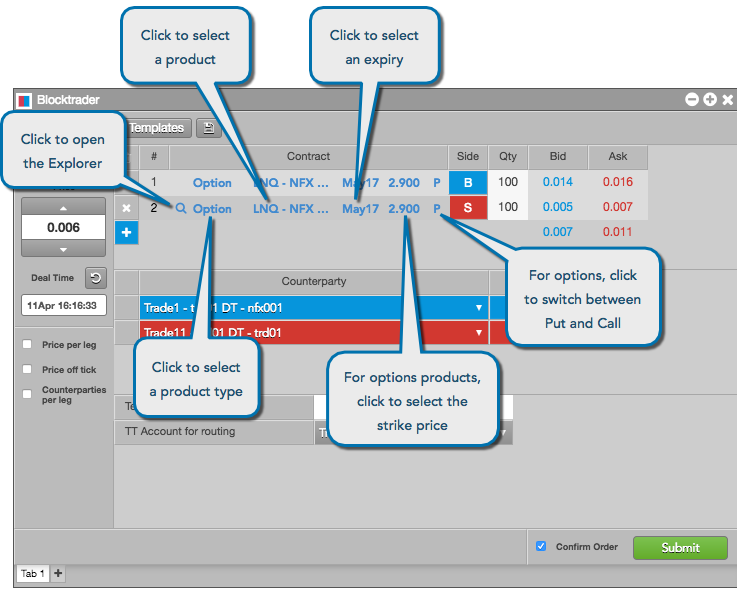

Use the Blocktrader widget to submit over-the-counter (block, off-exchange, wholesale, etc.) transactions supported by the exchange and market that you are trading.
To submit a block trade, click Widgets in the workspace title bar and select Miscellaneous | Blocktrader. In the open Blocktrader widget, click the exchange selector to select an exchange.
Based on the exchange, Blocktrader will display the fields required for submitting the trade. OTC and wholesale trades are supported on TT for the following exchanges:
For some exchanges, you can use the instrument picker to open the Market Explorer and search for a contract, or manually select an exchange, product, and contract.

When submitting a block trade, use the Deal Time field to set the time of the transaction. The time that you set applies to each leg and side of the transaction. The time value initially seeds with the current time and does not change until it is edited.
Click the Deal Time field to enter the time the trade occurred, or click to return the value to the current time.